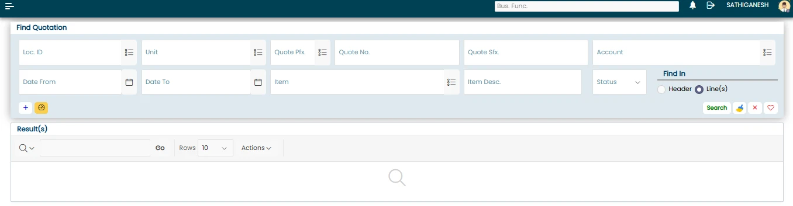
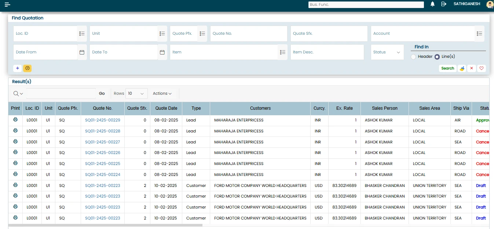
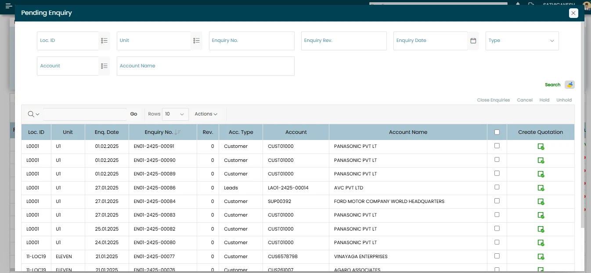
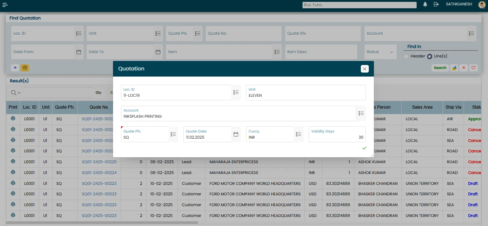
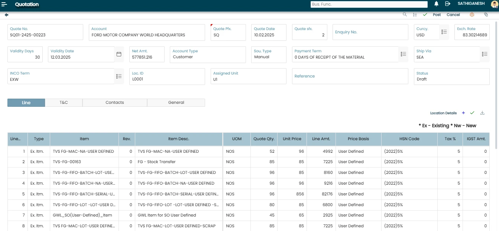

<div data-category="CRM" data-title="Quotation" data-updated="December 01, 2025" data-contributors="RoadmapIT" data-breadcrumb="Home,CRM,Quotation">
  <div class="page-content">
    <p>A quotation (or quote) is a formal offer for products or services provided to a potential customer at specified prices. It typically includes details such as product descriptions, quantities, prices, discounts, and terms of sale.</p>
    <p>The Quotation will be sent to the customer and the validity day will be assigned for that quotation to approve.</p>
    <h5>Navigation path:</h5>
    <p class="fs-6">CRM \ Transaction \ Quotation</p>
    
    <ul style="list-style-type: none; align-content: center">
      <li class="mouse-icon">Search screen displays the list of Quotation with the relevant details and its status</li>
      <li class="mouse-icon">Click on Search to filter all the records</li>
    </ul>
    
    <ul style="list-style-type: none; align-content: center">
      <li class="mouse-icon">User can filter the respective documents by entering the search parameters at the header</li>
      <li class="mouse-icon">On clicking search button, system displays the results relevant to the search parameters entered</li>
      <li class="mouse-icon">Using  icon, entered search parameters can be cleared</li>
      <li class="mouse-icon">To close the screen, use <i class="bi bi-x fs-4 mx-2 text-danger"></i> icon</li>
      <li class="mouse-icon">On clicking pending Enquiry <i class="bi bi-speedometer2 fs-4 mx-2"></i> yet to be processed is displayed as shown below</li>
    </ul>
    
    <ul style="list-style-type: none; align-content: center">
      <li class="mouse-icon">You filter with the Approved Enquiry. Field or with any of the relevant search fields in the header, Quotation will be displayed with the following details</li>
      <li class="mouse-icon">Unit location, Enquiry number & Prefix, Enquire date, Account </li>
      <li class="mouse-icon">You can create the Sales Quotation</li>
      <li class="mouse-icon">You can also close the Enquire</li>
      <li class="mouse-icon">Click the Update stage button to update the Enquire stage</li>
      <li class="mouse-icon">Click the Hold button for freeze the document</li>
      <li class="mouse-icon">Click the Unhold button for un-freeze the document</li>
      <li class="mouse-icon">Select the line item button to create Sales Quotation</li>
      <li class="mouse-icon">By Clicking the <i class="bi bi-plus fs-4 mx-2 text-primary"></i> Add button we can create new Quotation. The Quotation details given are populated to the transaction screen once executed</li>
    </ul>
    
    <ul style="list-style-type: none; align-content: center">
      <li class="mouse-icon">Choose the Location from the LOV</li>
      <li class="mouse-icon">Choose the Account from LOV</li>
      <li class="mouse-icon">Choose the Quotation Prefix</li>
      <li class="mouse-icon">Enter the Date</li>
      <li class="mouse-icon">Enter the Currency details </li>
      <li class="mouse-icon">Click <i class="bi bi-check-lg fs-4 mx-1 text-success"></i> to Save it</li>
      <li class="mouse-icon">Transaction Screen will be shown</li>
    </ul>
    
    <ul style="list-style-type: none; align-content: center">
      <li class="mouse-icon">When Record creates from Pending screen, unit cost should be entered manually</li>
      <li class="mouse-icon">For Direct Entry - When Item type is New, need to Enter the Item Desc, Qty and Unit cost manually and Item type is Ex. Item, need to choose the Item ID and Enter the Qty. and Unit cost manually</li>
      <li class="mouse-icon">Choose the Item & Enter the Qty</li>
      <li class="mouse-icon">You can run the reports by clicking onPrint buttons.</li>
      <li class="mouse-icon">Click <i class="bi bi-check-lg fs-4 mx-1 text-success"></i> to Save it</li>
      <li class="mouse-icon">Click post button</li>
      <li class="mouse-icon">You can view the Feasibility Record</li>
      <li class="mouse-icon">You can view the Cost Estimation Record</li>
    </ul>
  </div>
</div>